세무칼럼
자주 받는 질문을 글로 정리했습니다
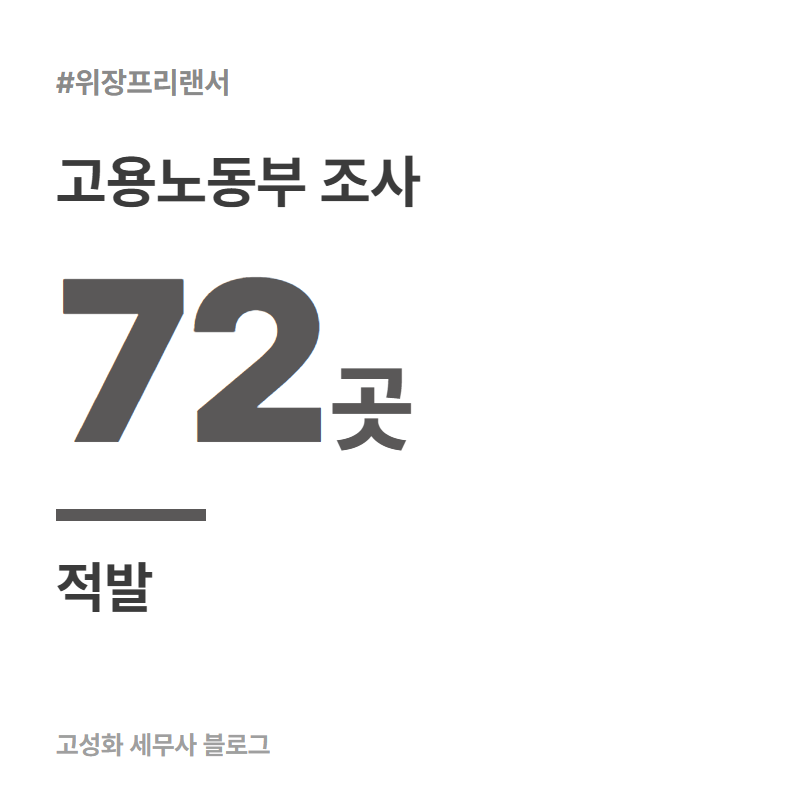
학원 강사 3.3% 위장 프리랜서 72곳 적발 기준
지난주에 학원을 운영하시는 원장님이 강사 계약서 뭉치를 들고 사무실에 오셨습니다. 뉴스에서 위장 프리랜서 단속 이야기를 보셨다고, 지금 강사님들과 맺은 계약이 괜찮은 건지 궁금해하셨습니다. 저는 상…
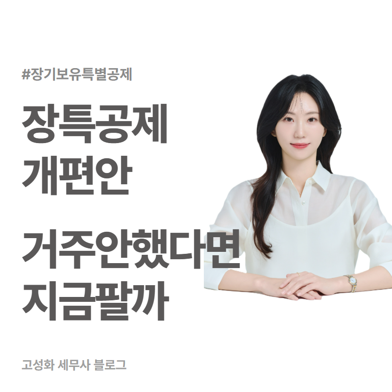
장기보유특별공제 개편, 거주 안 했다면 지금 팔까요
요즘 상담을 하다 보면 세제개편안 캡처본을 들고 오셔서 "이거 저한테도 해당되나요"라고 물으시는 분들이 부쩍 늘었습니다. 특히 오래전에 사둔 집을 정리할지 말지 고민하시는 분들이 많습니다. 이번 개…
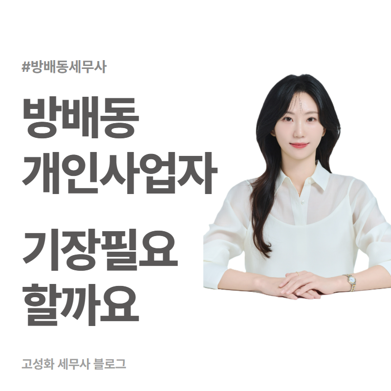
방배동 개인사업자 기장, 매출 없어도 필요한가
사무실이 서초구 방배천로에 있다 보니, 사업자등록증을 막 받은 분들이 종종 찾아오십니다. 손에 등록증을 들고 오자마자 묻는 말은 거의 똑같습니다. "저 이제 뭘 해야 하나요?" 오래 상담하다 보면 …
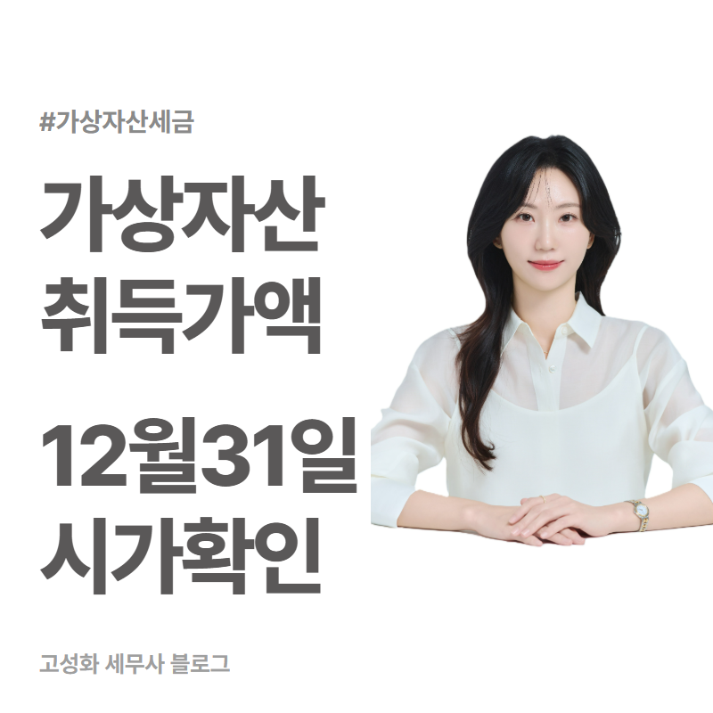
가상자산 취득가액 2026년 12월31일 시가 적용
지난달부터 사무실에 가상자산 세금을 묻는 전화가 부쩍 늘었습니다. 저희는 종합소득세와 법인 기장, 양도소득세까지 폭넓게 상담을 맡아오면서, 세법이 새로 바뀔 때는 기사나 다른 블로그보다 법령 원문을…
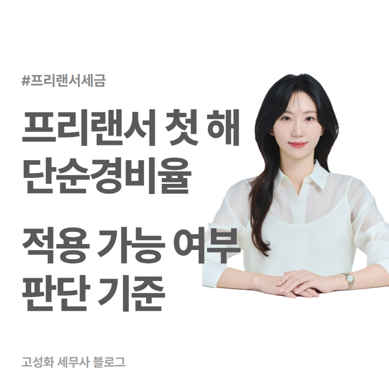
프리랜서 첫 해 단순경비율 적용 가능 여부 판단 기준
성화세무회계는 매년 5월이면, 프리랜서로 막 첫 해를 보낸 개발자나 디자이너분들에게 비슷한 질문을 자주 받습니다. 경비를 어떻게 인정받아야 하느냐는 질문입니다. 특히 3.3%를 떼고 대가를 받아온 …
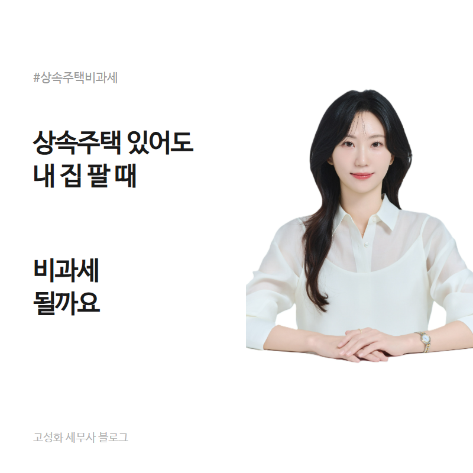
상속주택 있어도 내 집 팔 때 양도세 비과세 될까요
성화세무회계는 세금을 계산해드리기 전에 왜 이런 결과가 나오는지부터 설명해드리는 걸 원칙으로 삼고 있습니다. 오늘 다룰 상속주택 이야기도 계산법보다 원리를 먼저 짚어드리려 합니다. 부모님이 물려주신…
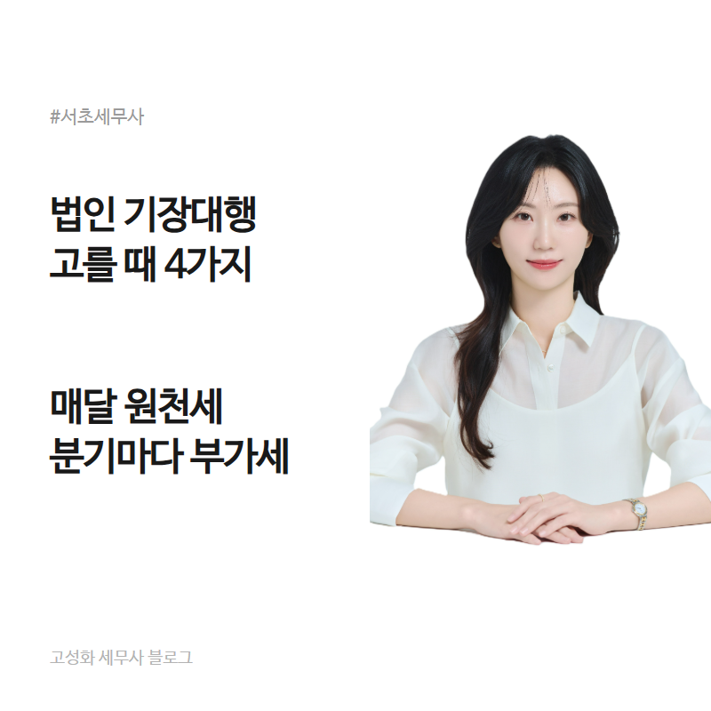
서초 법인 기장대행, 세무사 고를 때 확인할 4가지
법인을 세우고 몇 달 지나면 비슷한 고민을 하시는 대표님이 계십니다. "기장은 맡겨놨는데, 이게 제대로 되고 있는 건지 모르겠어요." 서초에서 법인 대표님들을 만나다 보면 이 말을 생각보다 자주 듣…
업무용승용차 리스료 800만원 한도, 운행일지 안쓰면 달라집니다
얼마 전 리스로 차량을 새로 계약하신 대표님이 상담을 요청하신 적이 있습니다. 월 리스료가 꽤 크니 그만큼 비용으로 다 인정될 거라 생각하셨는데, 계산해보니 예상보다 훨씬 적은 금액만 남더라고요. …
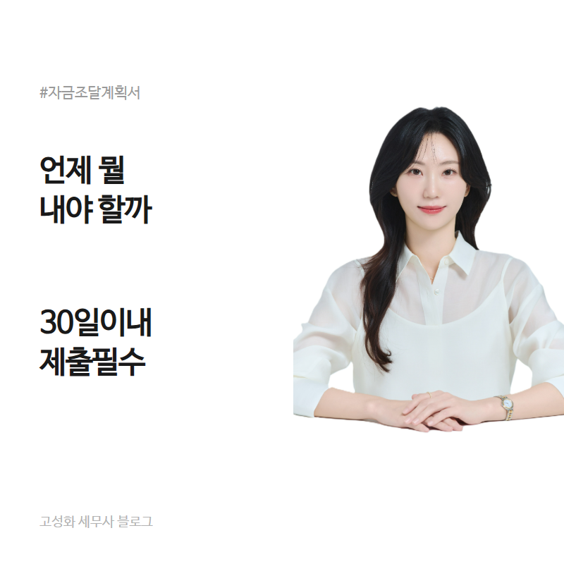
자금조달계획서, 언제 뭘 내야 할까요
성화세무회계는 부동산 취득 상담을 할 때 세금 계산보다 서류 순서부터 확인합니다. 자금조달계획서는 한 번 기한을 놓치면 되돌리기 어려운 서류이기 때문입니다. 등기가 며칠씩 밀리는 걸 보면, 미리 알…
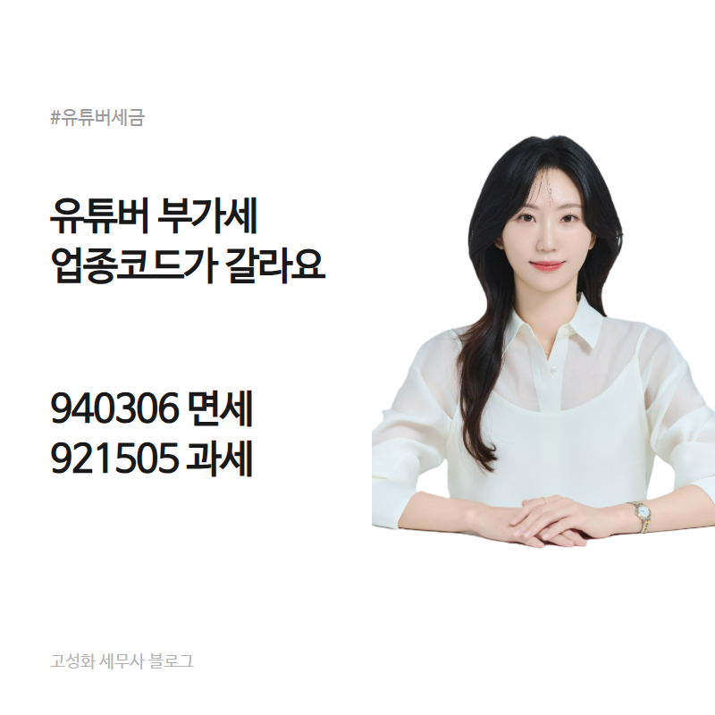
유튜버 부가세, 업종코드 하나로 갈립니다
구독자가 늘고 애드센스 첫 정산금이 들어온 시점에 상담을 오시는 크리에이터분들이 많습니다. 대부분 비슷한 질문을 하십니다. "사업자등록을 해야 한다는데, 뭘로 해야 하는지 모르겠어요." 성화세무회계…
가족 간 계좌이체, 생활비도 증여세 될 수 있어요
성화세무회계에서 상담하다 보면 이런 질문을 자주 받습니다. "부모님이 생활비 좀 보태주신 건데 이것도 세금이 나오나요?" 대개는 괜찮습니다. 다만 괜찮지 않은 경우가 분명히 있고, 그 경계가 생각보…
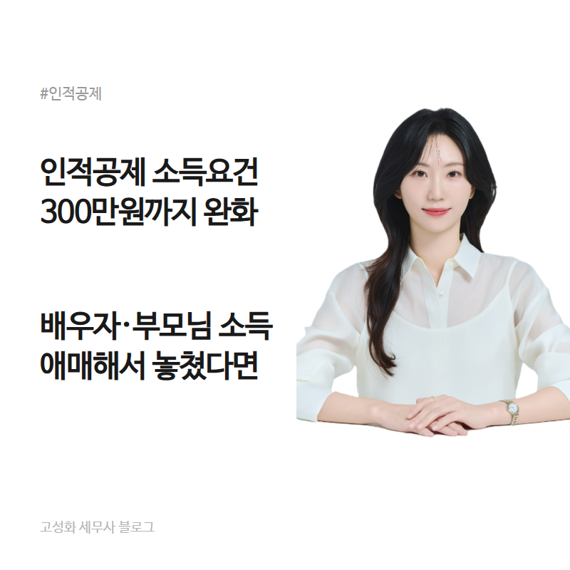
인적공제 소득요건 완화, 300만원까지 확대
연말정산 시즌마다 상담실에서 가장 많이 받는 질문 중 하나가 "이 사람, 부양가족으로 올릴 수 있나요"입니다. 배우자가 파트타임을 뛰고 있거나 부모님이 소일거리로 용돈벌이를 하시면 애매해지는 부분이…
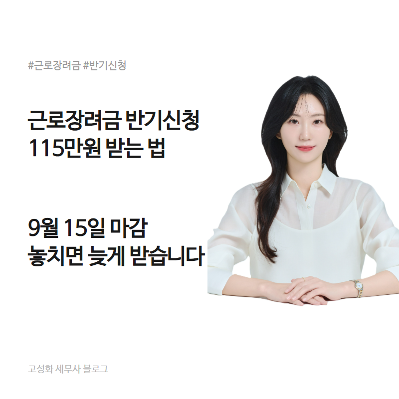
근로장려금 반기신청, 115만원 받는 법
성화세무회계에는 요즘 근로장려금 안내 문자를 받고 전화를 주시는 분들이 있습니다. 문자에 적힌 금액이 맞는지, 정말 신청만 하면 되는 건지 궁금해하십니다. 사실 이 제도는 국세청이 알아서 챙겨주는 …
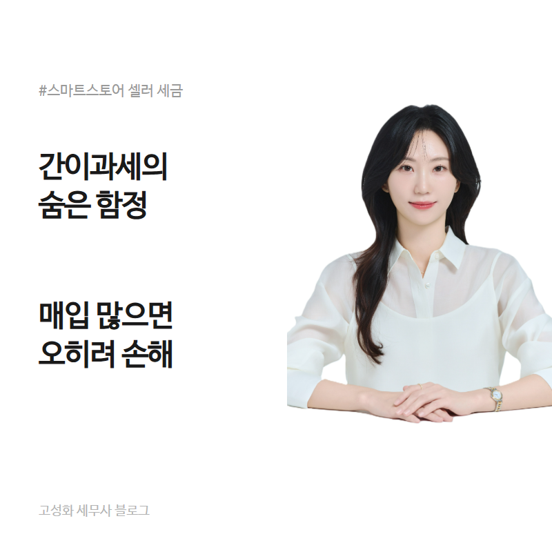
스마트스토어 셀러 간이과세의 숨은 함정
스마트스토어를 처음 여신 분들과 상담하다 보면 반복되는 장면이 있습니다. 사업자등록증을 받아 들고, 상품을 몇 개 올리고, 첫 주문 알림이 뜨는 순간까지는 다들 표정이 밝습니다. 그러다 석 달쯤 지…
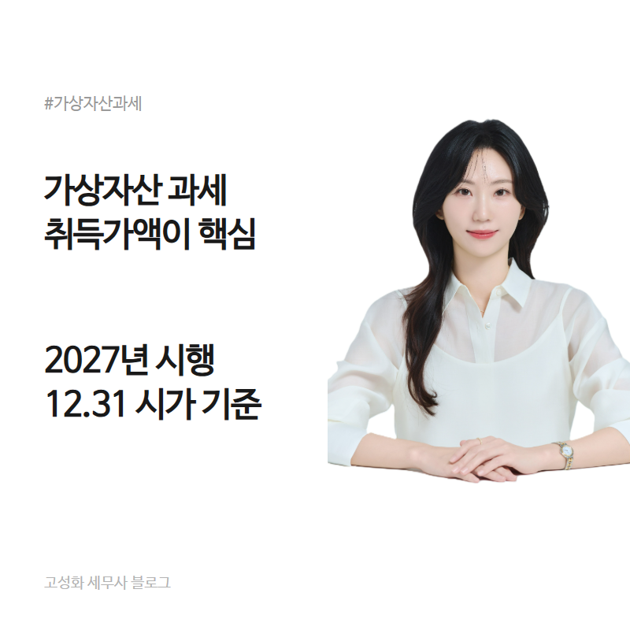
가상자산 과세, 취득가액은 지금 정해집니다
성화세무회계는 세법이 바뀌는 시점을 미리 챙겨서 알려드리는 걸 중요하게 생각합니다. 가상자산 과세도 그중 하나입니다. 아직 세금을 낼 시점은 아니지만, 올해가 가기 전에 반드시 확인해두셔야 할 숫자…
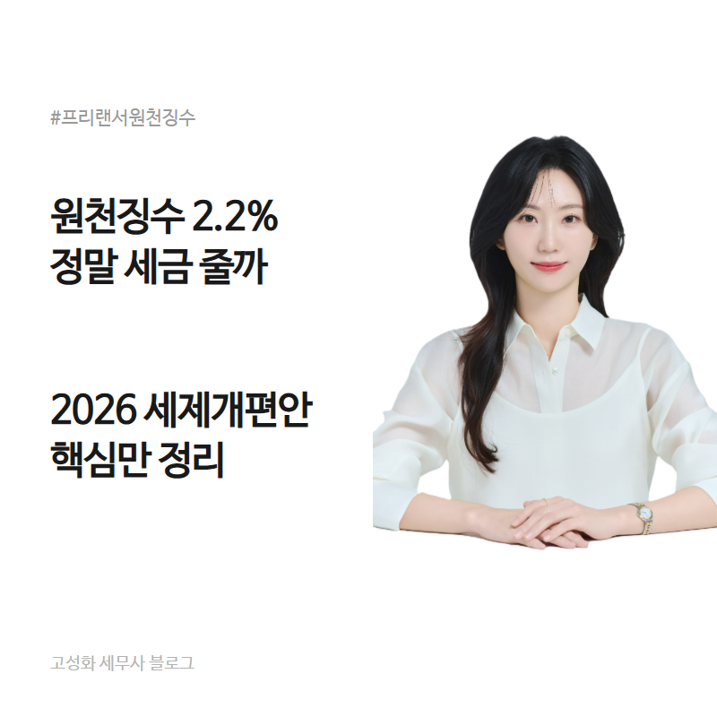
프리랜서 원천징수 2.2%의 함정
세무 상담을 하다 보면 "원천징수가 줄어들면 세금도 줄어드는 거죠?"라는 질문을 요즘 부쩍 자주 받습니다. 어제(9월 1일) 정부가 2026년 세제개편안을 국무회의에서 최종 확정하면서, 프리랜서를 …
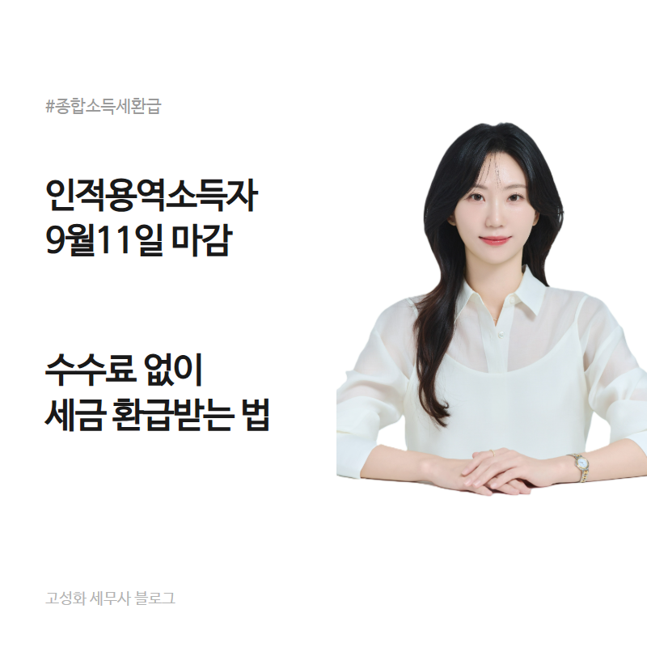
배달라이더·학원강사라면 9월 11일까지 확인하세요, 추석 전 세금 환급받는 법
배달 일을 하시는 분, 학원 강사, 대리운전 기사, 간병인처럼 소득을 받을 때마다 3.3%씩 떼이고 나머지만 손에 쥐어보신 분들 많으실 겁니다. "어차피 세금 뗐으니 끝난 거겠지" 하고 별도로 신고…
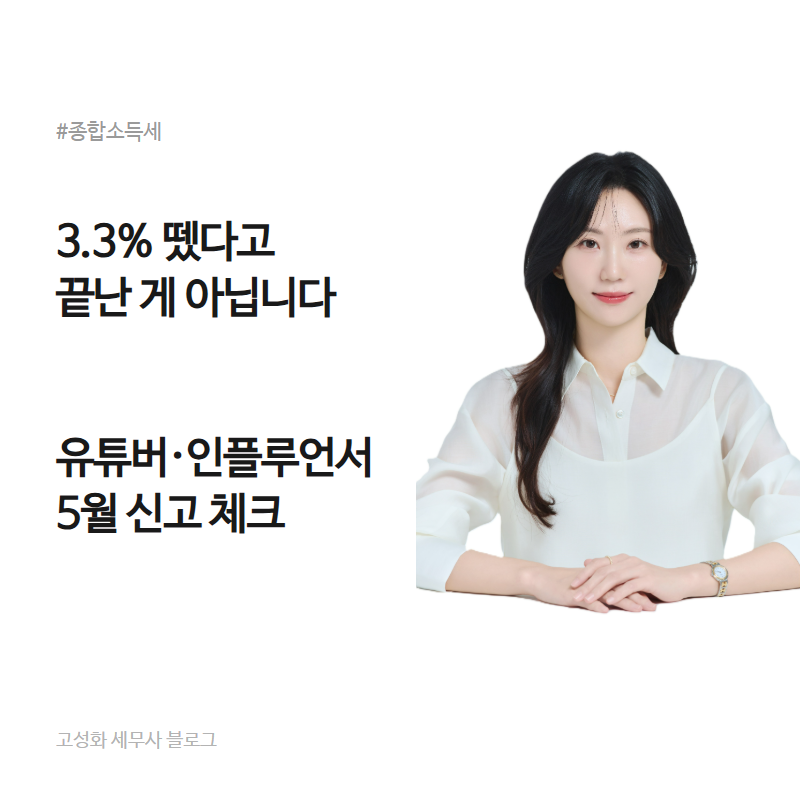
유튜버·인플루언서라면 필독, 3.3% 뗐다고 세금 끝난 게 아닙니다
이번 달에 브랜드 협찬비가 입금됐는데, 정산 내역을 보니 3.3%가 빠져 있었습니다. "어, 세금은 이미 낸 거네" 하고 넘기셨다면, 5월에 예상치 못한 고지서를 받으실 수 있습니다. 유튜브 광고 …
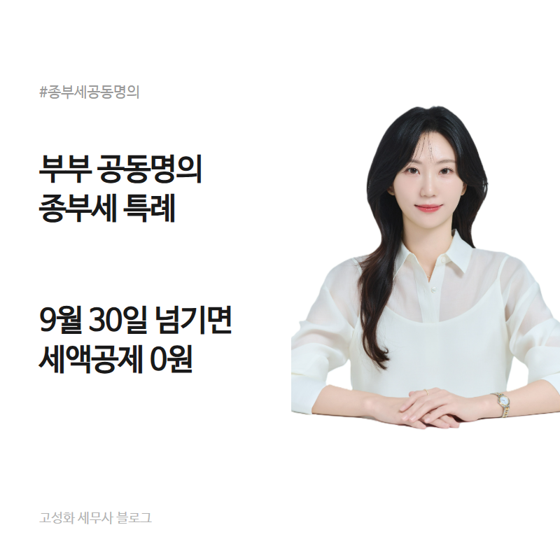
부부 공동명의 종부세, 9월 30일 넘기면 세액공제 못 받습니다
부부가 함께 명의로 아파트를 산 지 벌써 여러 해 됐습니다. 매년 11월이면 종합부동산세 고지서가 두 장 날아오고, "이번엔 얼마나 나올까" 하고 열어보는 게 익숙해졌을 텐데요. 그런데 이 고지서 …